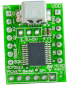
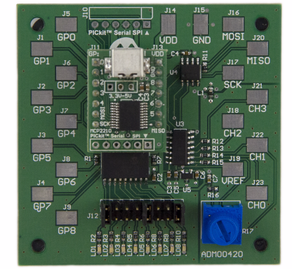
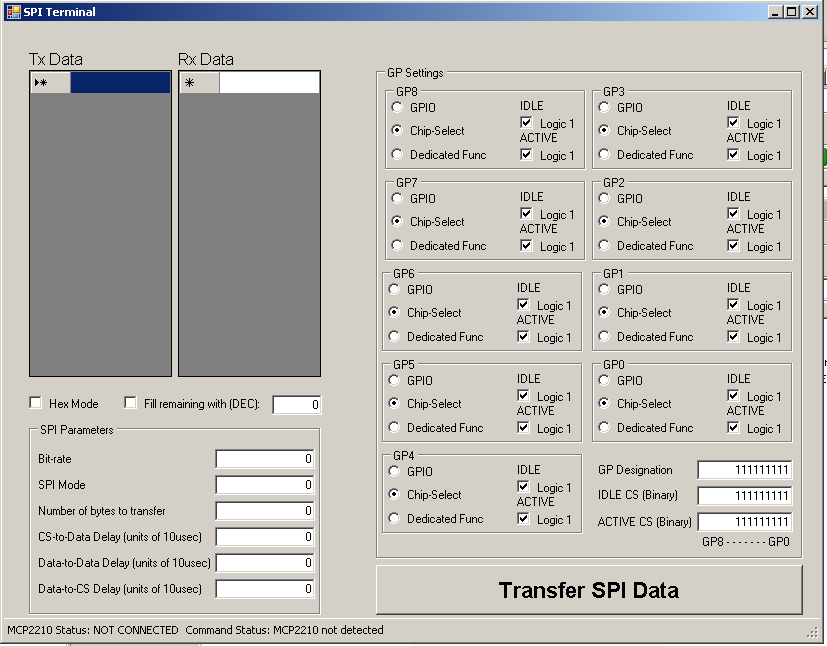

Notes by Dan Peirce B.Sc.
April 2, 2012
Updates at #MCP2210userguide
and #USB_SPI.
A new document became
available on March 15, 2012 MCP2210
Evaluation Kit and the MCP2210
Feb. 16, 2012
Also see
USBdevelopment.html
New development boards are available from Microchip. MCP2210
Evaluation Kit and the MCP2210 Breakout Module.
This may be preferable to the Low Pin Count USB Development Kit
since it would not require direct use of the Microchip USB
framework which has a very significant learning curve and takes
up PIC program memory. The Low Pin Count USB Development Kit
would probably be most useful to us if we were giving a course
specifically on USB.
At first look of what I can see on line I suspect that the
Breakout Module could be inserted into a breadboard like a DIP
IC.
http://www.microchip.com/stellent/idcplg?IdcService=SS_GET_PAGE&nodeId=1406&dDocName=en556988

quote from MCP2210
Evaluation Kit
Features
:
MCP2210 Breakout Board:
• Small plug-in board with DIP form factor (2,
10-pin headers spaced at 600mil)
• Mini-USB connector
• Access to the SPI bus and all the GP signals
• PICkit Serial Analyzer compatible header
• 3.3 or 5V jumper selectable VDD
• Able to supply up to 500mA to the rest of the
system |
http://ww1.microchip.com/downloads/en/DeviceDoc/22288A.pdf
I think this has advantages over using a USB
to USART module and it avoids some of the disadvantages of
using a PIC with a built in USB transceiver.
Advantages of USB to SPI over USB to USART module:
- The USB model of data transfer is more like that of
SPI than and less like the USART model.
USB is set up as a host and
device and SPI has a master and slave. USART on the
other hand is for communications between peers.
- This module also has built in general purpose IO.
- One can connect it directly to devices like SPI 12 bit
ADC's or SPI enabled sensors.
- The PIC18F4525 can also be configured to act as an SPI
slave device.
- It is possible to have multiple SPI slaves connected
to one master device. In this case the MCP2210 is the
master.
- We could continue to use the USART to connect to a LCD
module.
- It is conceivable one could use GPIO channels to
indicate data is ready to send or receive or busy or
stop and listen.
Example of use with SPI sensors and ADC's is provided by
an available mother board this module can plug into:

quote from MCP2210
Evaluation Kit
MCP2210 SPI slave Motherboard:
• Socket for insertion of the MCP2210 Breakout
Board
• Easily accessible test points for the SPI
bus and GP signals
• PICkit Serial Analyzer header to access the
MCP23S08
• Potentiometer allows altering of voltage on
the channel 1 ADC input |
By itself the USB adaptor board is about $15. The kit
with both boards is about $30.
Microchip Provides an example program
called SPI terminal (with source code)
